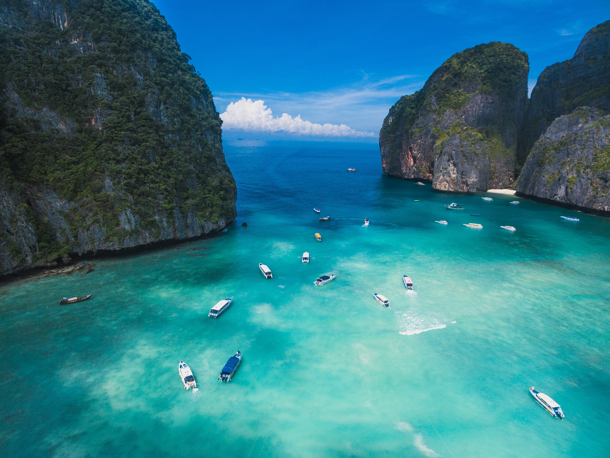
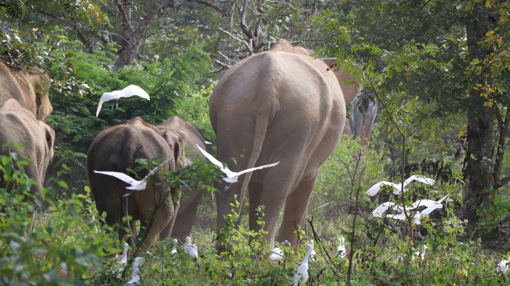

Wilde olifanten, jungle, snorkelen en nog veel meer in de Thaise natuur!
De natuur in Thailand is werkelijk prachtig en heeft voor iedereen iets bijzonders te bieden! Van groene jungles en indrukwekkende bergen tot witte zandstranden en helderblauw water: je kijkt je ogen uit. Je kunt er wilde dieren spotten, snorkelen tussen kleurrijke vissen of genieten van een adembenemende zonsondergang. Of je nu van avontuur houdt of liever ontspant, de Thaise natuur zal je verrassen. Een bezoek aan Thailand is daarom zeker de moeite waard! Omdat er zo veel gave natuur is in Thailand zijn hier wat inspiratie foto's voor uw trip naar Thailand:

Doi Inthanon National Park

Khao Yai National Park

The Phi Phi Islands

Kui Buri National Park

Phang Nga Bay

Khao Sok National Park

Maya Bay

Koh Nang Yuan